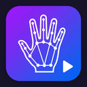

GestMedia
Webcam hand gestures that control whatever is playing in your browser — YouTube, JioHotstar, Hotstar, Netflix, Spotify or any page with a video or audio element. Everything runs on-device; no frame ever leaves your computer.
1 · Camera access
Checking…
Chrome keeps opening my phone (“V2545”, “Link to Windows”)
That window comes from Windows’ Phone Link feature, which registers your phone as a virtual webcam. GestMedia never selects it automatically — pick your real webcam above (or hit Use this PC’s built-in camera) and it is remembered. To stop every app from grabbing it:
- Chrome:
chrome://settings/content/camera→ set the default camera to your integrated webcam. - Windows: Settings → Bluetooth & devices → Mobile devices → turn off “Use your phone as a connected camera”.
- Make sure the built-in camera is enabled in Settings → Bluetooth & devices → Cameras, and allowed under Privacy & security → Camera.
2 · Try your gestures
A live preview using the exact same detector the extension runs. Useful to check your lighting and framing on a slow machine.
3 · Gesture mapping
| Gesture | Action | Enabled |
|---|
4 · Performance & feel
5 · Disabled sites
Gestures are ignored on these hostnames.